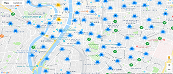

Bienvenue sur Vélo'v
Vélo'v vous permet de réserver un vélo sur la ville de Lyon.
Vous pouvez appuyer sur les flèches gauche et droite de votre clavier
pour avancer ou reculer dans le diaporama.
Suivez les instructions pour en savoir plus!
Sélectionnez une station sur la carte, dans laquelle vous souhaitez réserver votre vélo'v
Vous pouvez bouger et zoomer sur la carte.

Accédez à un regroupement de stations en cliquant sur l'une de ces icônes :


Remarquez une station ouverte avec vélos disponibles à travers cette icône :
Apercevez une station ouverte avec aucun vélos disponibles mais places disponibles grâce à cette icône :
Une station fermée est représentée par cette icône :